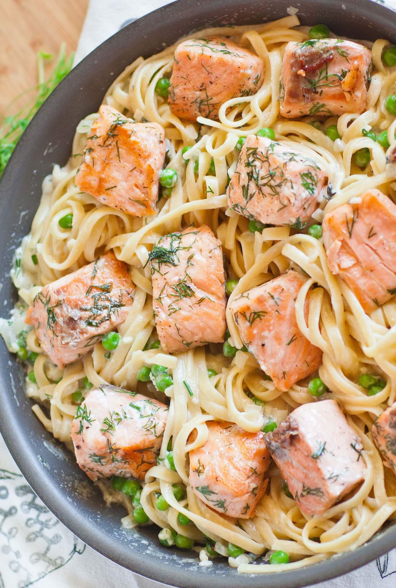

Alfredo pasta with salmon

This alfredo pasta with salmon is one of my favorites dishes, and soon will be yours too.
Alfredo pasta is an italian classic. It consists of fresh fettuccine, butter and some cheese and it takes little to no time.
Your family and you included will surely love this dish. I know I do.
- 1 (16 ounce) jar Alfredo sauce
- 1 pound salmon fillets
- 1 lemon, juiced
- 1 tablespooon vinegar
- 1 teaspoon dried basil
- 1 teaspoon dried parsley
- 1 (16 ounce) package uncooked rotini pasta
- 1 (6 ounce) package shredded Parmesan cheese
Steps
- Preheat oven to 400°F (200°C). Heat Alfredo sauce in a medium saucepan over medium heat.
- Place salmon in a baking dish. Mix the lemon juice and vinegar in a small bowl, and pour over the salmon. Season with basil and parsley.
- Bake salmon 15 minutes in the preheated oven, until easily flaked with a fork. Remove from heat, and break into bite sized pieces.
- Bring a large pot of lightly salted water to a boil. Add rotini, and cook 8 to 10 minutes or until al dente. Drain, and place in a large bowl.
- Gently toss the salmon, pasta and Alfredo sauce together in the large bowl. Serve with the Parmesan cheese.